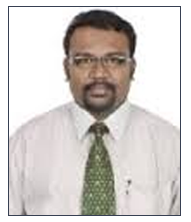

+91-98607-55000
Get an
Appointment
Nova Top Surgeons [X]



Dr. T. V. Raja
Consultant Orthopedics
Clinical Focus and Expertise
Foot and Ankle Surgery
General Surgery - Stanley Medical College - 1992-1993
Orthopedics - Stanley Medical College & Hospitals - 1993-1994
Medical Officer, Chennai Kaliappa Hospital 1993-94
Assistant Orthopedic Surgeon, Malar Hospitals, Dec 1996-Mar 2000
Assistant Orthopedic Surgeon, Chennai Kaliappa Hospital Apr 2002-Mar 2004
Workshop on Minimal Invasive Foot and Ankle Surgery at the University of Texas, Health and Science Centre, San Antonio, October 2006
Paper submitted at the Thew College of Minimal Invasive Foot and Ankle Surgery, Nottingham, England, October 2006
Education
MBBS, Annamalai University, Chidambaram Feb 1992
D.Cr, Annamalai University, Chidambaram Feb 1993
D.Orth, Jawaharlal Medical College, Belgaum, Karnataka Aug 1996
Dip. Foot Surgery, Bordeaux, France 2005
Founder of Southern Osteoporosis Research Foundation. Was started to create awareness and caution to patients suffering from Osteoporosis.
Conferences and Seminars Attended
31st Annual conference of Tamilnadu Orthopedic Association, Salem - January 1998
Inaugural Scientific Conference, MIOT Hospital, Chennai, AFORT - February 1999
48th Annual conference, Ramachandra Medical College& Research Institute, IOACON, December 2003
CME Programme, Current concepts and Strategies in Orthopedics, The Indian Scenario, IOACON, December 2003
The College of Minimal Invasive Foot and Ankle and seminar held at Nottingham Mechanic Institute, October 2005
Current Opinions in Osteo Arthritis, CME, Thailand , November 2005
Delegate at the 39th Annual State Conference, TNOACON , Chennai, March 2006
37th Annual Foot and Ankle conference, Sant Rafael Hospital, Barcelona, May 2006
3rd Advanced Indo-US workshop on Diabetic Foot Complication - Diabetic Research Centre , November 2006
8th European Foot and Ankle Society - Instructional Course , Barcelona , May 2006
Scientific Seminar by AAFAS, The Academy of Ambulatory Foot and Ankle Surgery - The University of Texas , Health Science Centre , San Antonio , October 2006
Podiatric Surgical Workshop - INFOCES/JIVAS Jain Hospital, Bangalore, May 2007
Indian Foot and Ankle Society , Annual Conference , Hyderabad , August 2007
IOACON 57, 52 Annual conference - Kolkata, West Bengal , December 2007
Memberships
Tamilnadu Medical Council - November 1992
All India Medicos Society - February 1993
Tamilnadu Medical Concil - July 1993
The Royal Society of Health - March 1999
Indian Medical Association - July 2003
Singapore Orthopaedic Association
Associate Member - The Academy of Ambulatory Foot and Ankle Surgery - June 2005
Associate Member Surgery - The College of Minimal Invasive Foot and Ankle - July 2005
Regional Director December 2005 - The Academy of Foot and Ankle Surgery in India